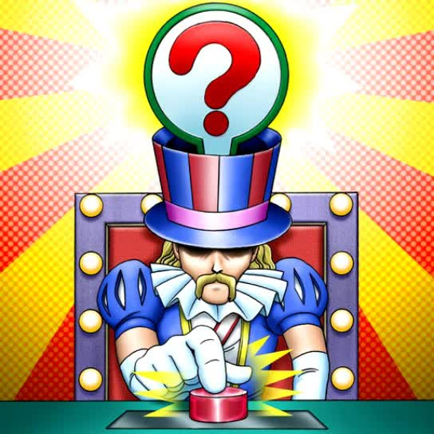

Quiz:  Pregunta A: ¿Cual es el rango de Utopia? 3 4 5 Pregunta B: ¿Que carta cerro el duelo contra Don Thosuand? Double or Nothing! Numeron Network Number 39: Utopia Number 101: Silent Honor ARK Pregunta C: ¿Que particularidad tienen los Number que juega Nash contra Yuma? Son de atributo oscuridad Tienen efectos relacionados con descartar cartas Son "Numbers" por encima del "Number" 100 Pregunta D: ¿Cual es el rango de Numeronias numeronia? 0 12 13 11 Introduzca su nick antes de enviar el quiz: